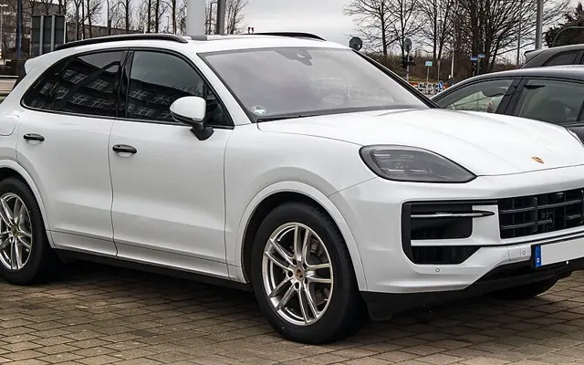

Par Motor › Precios por modelo › Porsche Cayenne
Precio de segunda mano · noviembre de 2026¿Cuánto vale un Porsche Cayenne de segunda mano?

Precio justo estimado de un Porsche Cayenne usado en España, año por año, con los kilómetros normales para su edad y en buen estado: de 34.500 € a 145.700 €. Para tasar el tuyo con sus kilómetros reales y su estado, usa el tasador gratis.
Precios del Porsche Cayenne por año
Cayenne 958 (2010–2017)
Precio de nuevo: 3.6 V6 300 CV, 70.000 € · Diesel 3.0 245 CV, 72.000 € · S E-Hybrid (enchufable) 416 CV, 90.000 €
| Año | Km normales | 3.6 V6 300 CV · Gasolina | Diesel 3.0 245 CV · Diésel | S E-Hybrid (enchufable) 416 CV · Híbrido enchufable |
|---|---|---|---|---|
| 2017 | 100.000 km | 43.000 € | 48.900 € | 49.700 € |
| 2016 | 100.000 km | 42.700 € | 46.800 € | 49.400 € |
| 2015 | 100.000 km | 42.300 € | 44.500 € | 49.000 € |
| 2014 | 100.000 km | 41.900 € | 42.300 € | 48.500 € |
| 2013 | 100.000 km | 40.300 € | 40.200 € | 46.600 € |
| 2012 | 100.000 km | 38.300 € | 38.200 € | 44.300 € |
| 2011 | 100.000 km | 36.400 € | 36.300 € | 42.100 € |
| 2010 | 100.000 km | 34.600 € | 34.500 € | 40.000 € |
Cayenne 9Y0 (2018–hoy)
Precio de nuevo: 3.0 V6 340 CV, 85.000 € · E-Hybrid (enchufable) 462 CV, 100.000 € · Cayenne Electric Turbo 1156 CV, 165.000 €
| Año | Km normales | 3.0 V6 340 CV · Gasolina | E-Hybrid (enchufable) 462 CV · Híbrido enchufable | Cayenne Electric Turbo 1156 CV · Eléctrico |
|---|---|---|---|---|
| 2026 | 5.000 km | 88.300 € | 93.500 € | 145.700 € |
| 2025 | 20.000 km | 78.300 € | 82.900 € | 129.300 € |
| 2024 | 35.000 km | 74.500 € | 78.800 € | 122.900 € |
| 2023 | 50.000 km | 70.800 € | 74.900 € | 116.800 € |
| 2022 | 65.000 km | 67.300 € | 71.200 € | 111.000 € |
| 2021 | 80.000 km | 61.400 € | 65.000 € | 101.300 € |
| 2020 | 95.000 km | 54.700 € | 57.900 € | 90.300 € |
| 2019 | 100.000 km | 52.600 € | 55.700 € | 86.800 € |
| 2018 | 100.000 km | 52.400 € | 55.500 € | 86.500 € |
Kilómetros normales: 15.000 al año en gasolina, híbridos y eléctricos, y 20.000 en diésel, con un máximo de 100.000 km (por encima no tasamos: el precio depende demasiado del historial de cada coche). Cifras redondeadas a 100 €.
Preguntas frecuentes
¿Cuánto vale un Porsche Cayenne de segunda mano?
Según el año, la versión y los kilómetros, un Porsche Cayenne usado vale hoy de 34.500 € a 145.700 € en España. El más barato de nuestra tabla es un Diesel 3.0 de 2010 (34.500 €) y el más caro un Cayenne Electric Turbo de 2026 (145.700 €). Son precios justos estimados entre particulares y profesionales, con los kilómetros normales para su edad y en buen estado.
¿Cuánto valor pierde un Porsche Cayenne al año?
Con unos años encima, un Porsche Cayenne pierde alrededor de un 5 % de su valor cada año (calculado sobre el 3.0 V6 de la generación Cayenne 9Y0). Los primeros años la caída es mayor y a partir de los 70.000 km se acelera.
¿Qué motorizaciones tiene el Porsche Cayenne?
En nuestra base de datos hay versiones gasolina, diésel, híbrido enchufable y eléctrico, en 2 generaciónes: Cayenne 958 y Cayenne 9Y0.
¿Cómo sé si me piden demasiado por un Porsche Cayenne?
Abre el tasador de Par Motor, elige el Porsche Cayenne, el año y los kilómetros reales, y escribe lo que te piden. Te diremos si está por debajo del precio justo (chollo) o por encima (caro). Es gratis y no pide registro ni matrícula.
Otros Porsche
Compara su coste real
El precio de compra es solo una parte. Mira cuánto te costaría al mes con combustible, seguro, neumáticos, mantenimiento y lo que pierde de valor.
Abrir el comparador →